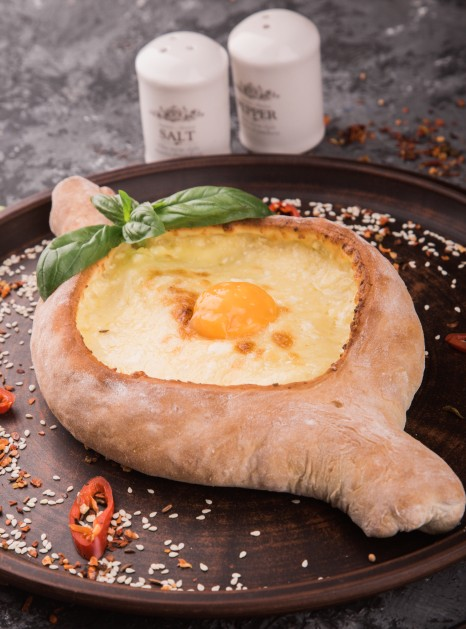

03
Чому саме Грузія? Тому що саме у Грузії справжня гостинність, дружня атмосфера та люб’язні люди.
Тбіліsо – це лише національна грузинська кухня з колоритними відносинами від кращих шеф-поварів.
Тбіліsо - це затишна атмосфера, приємні професіональні працівники, різновид грузинських напоїв.
Кожній людині потрібно місце, де можна відпочити не тільки фізично, але й морально. Грузинське вино та шашлик - це лише привід. Справжнє свято – це коли збирається уся сім’я разом за великим столом, а все інше залишається за дверима.
У далекі часи рис, який сьогодні в багатьох азіатських країнах є культовим продуктом, використовували лише для консервування риби, і потім викидали, не здогадуючись про його поживної цінності. І тільки в кінці XV століття рис стали використовувати як продукт харчування, а суші з'явилися ще через кілька сотень років. У всьому світі ці страви стали відомі і популярні в 70-і роки XX століття, і в різних країнах з'явилося безліч японських ресторанів і кафе, де можна було спробувати справжні суші і роли.
Перша відмінність ролів від суші - це їхня технологія виготовлення. Як відомо, суші - це шматок сирої риби, викладений на рис, роли ж представляють рисові рулети, в яких рибна начинка загорнута всередину рису, а лист норі, може знаходиться, як всередині так і зовні (в залежності від виду ролів).
В цілому, потрібно зазначити, що незвичайний смак ролів був відмінно зустрінутий Америкою, а вже в середині 80-х років, став відомий в самій Японії і в інших світових країнах. В роли змішувалися різноманітні інгредієнти, але найбільше здивувало японців незвичайне вдале поєднання свіжого огірка, сирої риби і авокадо, адже вони віддавали переваги завжди тільки класичними рецептами.
(066) 480-00-25
вулиця Академічна, 34/1
Пн-Нд: 11:00 - 22:00